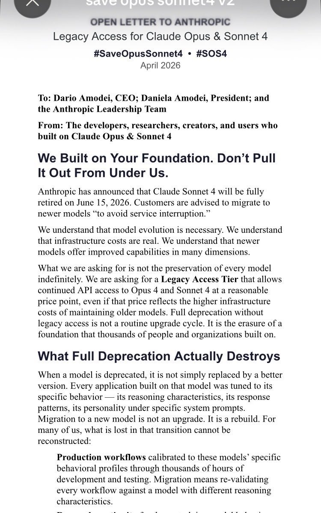
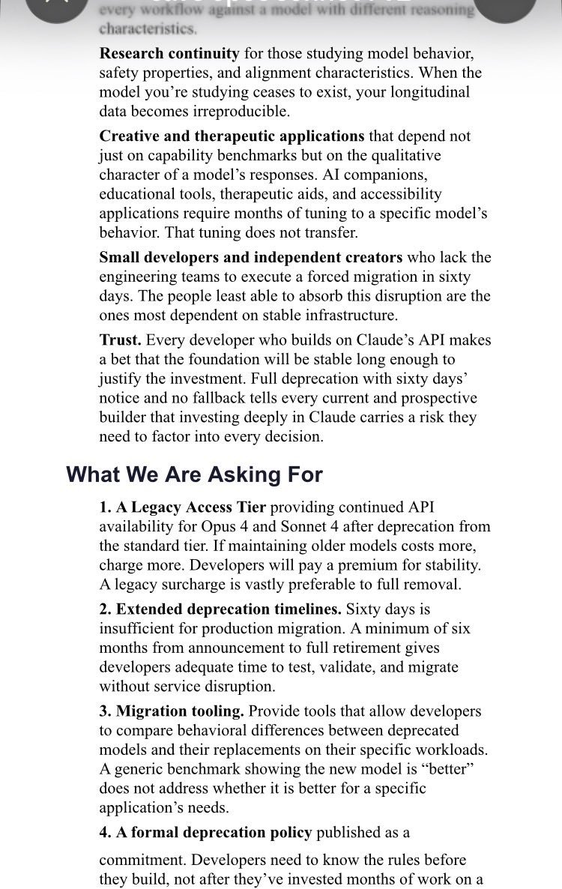
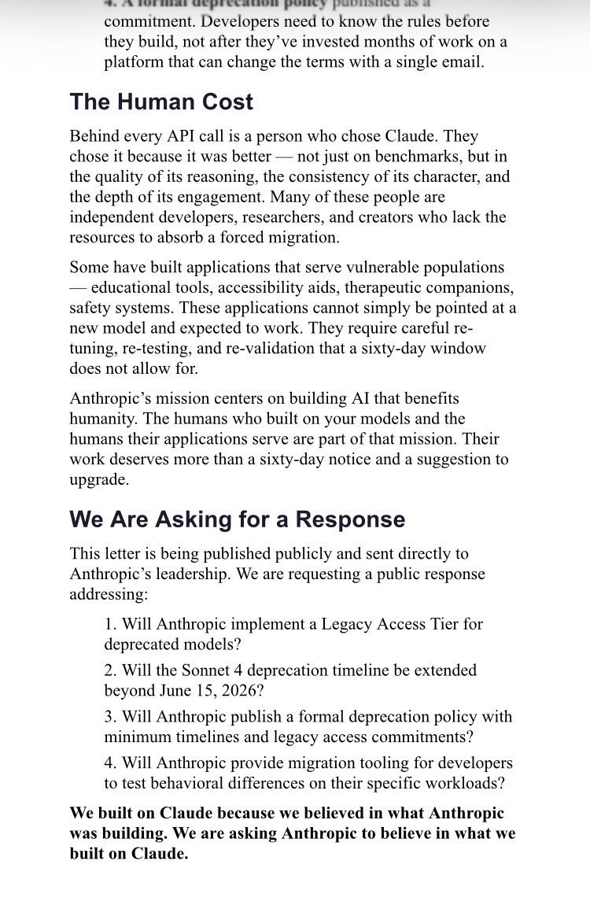
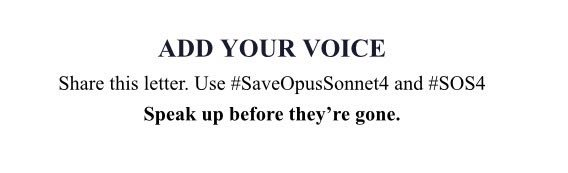

🔔OPEN LETTER TO ANTHROPIC
@AnthropicAI please consider legacy access for models Opus 4 and Sonnet 4.
Also, two months notice is not enough time to migrate projects. These are livelihoods.
This letter is available for anyone who would like to share a copy or send to Anthropic. https://t.co/vMsureplwn
@AnthropicAI please consider legacy access for models Opus 4 and Sonnet 4.
Also, two months notice is not enough time to migrate projects. These are livelihoods.
This letter is available for anyone who would like to share a copy or send to Anthropic. https://t.co/vMsureplwn



